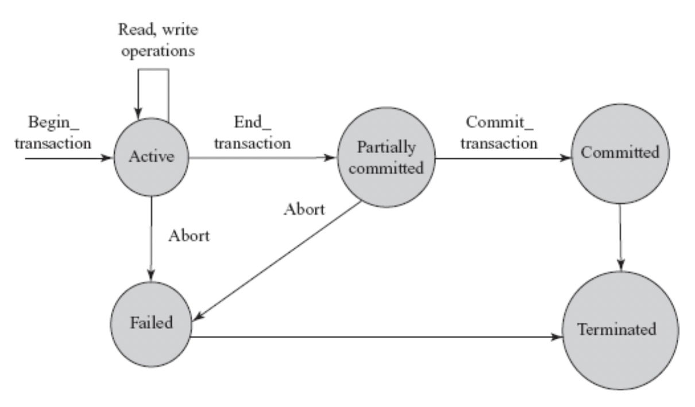
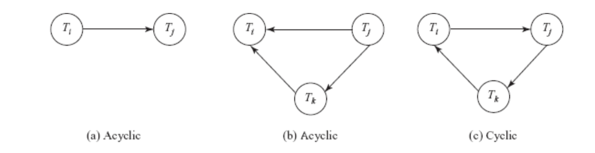

For background on transactions, see Transactions in SQLite
During execution, transactions pass through various states.
begin transaction to
end transaction – the operations are actively being
executedknitr::include_graphics("imgs/states_diagram.png")
Transaction processing allows for concurrent execution using interleaved execution.
Interleaved execution: dbms controls execution of 2+ transactions, but only one operation occurs at a time.
Poorly interleaved transactions can cause several types of anomalies
A list of operations form transaction set known as a schedule or history. * comprises all instructions of participating transactions + preserves order of instructions within transactions * only relevant operations for recovery/concurrency control are reading r, writing w, aborting a, committing c
Serial schedule: operations of one transaction appear together (no interleaving)
Eg. \(S_1: r_1(A); w_1(A); r_1(B); r_5(B); w_5(B); r_5(C); w_5(C);\), where \(S_1\) is the schedule, A, B, and C are tables, and transaction id are subscript operations.
Non-serial schedule: interleaved execution, CPU time shared among all transactions
Eg. \(S_4: r_1(A); w_1(A); r_5(B); w_5(B); w_1(B); r_5(C); w_5(C);\)
Result equivalence: two schedules that produce the same final state of the database. May be accidental due to coincidences in data, so result equivalence alone is not enough to determine equivalence.
Conflict equivalence: if the order of two conflicting operations is the same in both schedules
knitr::include_graphics("imgs/precendence_graph.png")
View equivalence:
A blind write writes to a table without reading it first. These will appear in view serializable schedules that aren’t conflict serializable.
During concurrent execution, it must be ensured that a transaction that depends on another must also be rolled back.
Recoverable schedules: A schedule S s.t. if Tj reads a data item written by Ti, then the commit of Ti appears before the commit of Tj.
Cascadeless schedule: schedules that avoid cascading rollbacks, or needing to roll back multiple schedules because other transactions are dependent on the one rolled back. Ti and Tj are interleaved s.t. if Tj reads data written by Ti, the commit of Ti appears before the read of Tj. Cascadeless schedules are also recoverable.
In SQL:92 standard, there is no explicit
begin transaction statement. transactions begin when SQL
statements are encountered. However, explicit end statements
(commit or rollback) are required.
Transactions have several characteristics specified by the
set transaction statement
read only or
read writediagnostic size n, determines the number of error/exception
conditions that can be recorded in diagnostic area. Excess errors result
in only the most severe conditions being reportedserializable
default, transaction fully isolated from changes by other transaction.
Other levels: read uncommitted,
read committed, repeatable read,
uncommited. uncommited is lowest level, where
transaction can read subsequent changes from other transactions and can
allow for errors.NoSQL databases uses a flexible key/value store approach that requires an alternative to the ACID model.
BASE not appropriate for every situation, but is flexible alternative to ACID for databases not requiring strict adherence to relational model
Optimal use case for ACID – highly structured data with predictable inputs and outputs, eg. human-resource databases, retail databases, electronic med records
Optimal for BASE - better for fuzzy subjects, eg. emotion analysis